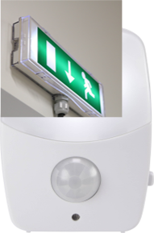
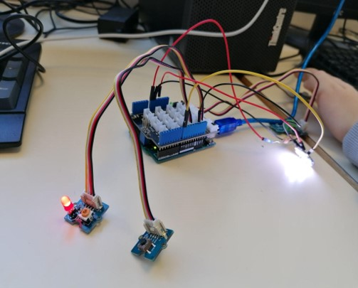
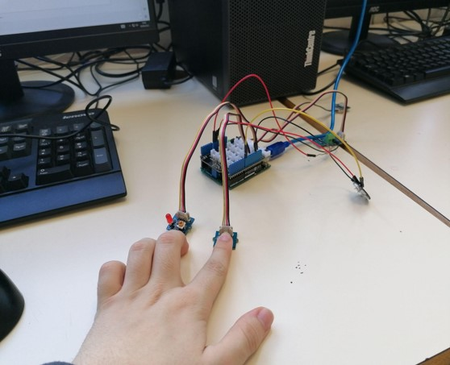

Projet de lumière de secours
Projet réalisé au Lycée Condorcet de Saint-Quentin
 Idée de base pour la forme
Le projet consiste à allumer une lumière en cas de coupure de courrant.
Surtout pendant des tempêtes et fortes intempéries.
Combien de personnes impliquées ? et leur spécialités ?
3 personnes composent le projet :
- Caniou Léo : SIN
- Thiery Mathias : EE
- Delprat Antoine : AC
Comment fonctionne notre projet ?
Et a quoi sert-il ?
Le projet va permettre qu'en cas de coupure de courant, une lumière s'allume.
Grâce à un capteur de courant, le système va s'allumer afin de savoir si un mouvement est detecté.
Il sera très utile pour des personnes âgées pour leur éviter une mauvaise chute.
Voici le matériel nécessaire pour ce projet
- une carte Arduino
- un capteur PIR (InfraRouge Passif)
- un bouton poussoir
- un capteur de courrant 2,5A DC
- un Neo Pixel Jewel
- un accumulateur
Pour en savoir plus
 Système avec la LED allumée
 Système éteint